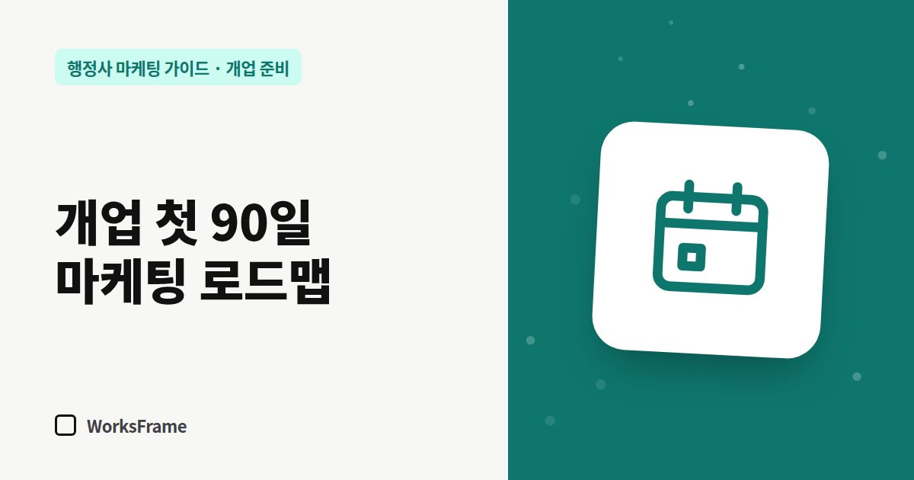

개업 준비
행정사 개업 첫 90일 마케팅 로드맵 — 주차별로 할 일
한 줄 답
1~30일엔 온라인 창구 만들기, 31~60일엔 업무 안내 글 쌓기, 61~90일엔 소개 관계 만들기와 숫자 기록 습관 들이기. 이 순서만 지켜도 충분합니다.

개업 직후에는 할 일이 너무 많아 무엇부터 해야 할지 막막합니다. 90일을 세 구간으로 나눠, 구간마다 끝내야 할 일만 적었습니다.
1~30일: 창구 만들기
목표는 고객이 사무소를 검색했을 때 제대로 된 정보가 나오는 것입니다.
- 1주차: 주력 업무 2~3개 확정, 사무소 정보 네 줄(이름·주소·전화·상담 시간) 통일
- 2주차: 네이버 플레이스 등록, 카카오톡 채널 개설
- 3주차: 홈페이지 오픈, 네이버 서치어드바이저·구글 서치 콘솔 등록
- 4주차: 구글 비즈니스 프로필, 명함 QR, 부재중 자동 문자
31~60일: 입구 늘리기
목표는 내 업무를 설명하는 글을 쌓기 시작하는 것입니다.
- 주력 업무마다 업무 안내 페이지 1개씩 (쓰는 법)
- 상담에서 받은 질문을 글감 목록으로 정리 (글감 만들기)
- 주 1편 글 발행 — 홈페이지 또는 블로그
- 플레이스 소식 2회, 사진 추가
61~90일: 관계와 숫자
목표는 소개가 생기는 구조와 기록하는 습관입니다.
기록할 숫자 다섯 개
| 숫자 | 어디서 보나 |
|---|---|
| 홈페이지 방문 수 | 방문 통계 도구 |
| 검색으로 들어온 방문 | 서치 콘솔·서치어드바이저 |
| 플레이스 조회·전화 | 스마트플레이스 통계 |
| 문의 건수 | 전화·카톡·폼 합계 |
| 계약 건수 | 상담 기록 |
90일 뒤에 할 일
기록을 보고 문의가 어디서 왔는지 확인하세요. 잘 되는 창구에 시간을 더 쓰고, 반응이 없는 곳은 줄입니다. 광고는 이 시점에 소액으로 실험해도 늦지 않습니다.
자주 묻는 질문
90일 안에 문의가 안 오면 어떻게 하나요?
검색으로 들어오는 유입은 보통 몇 달에 걸쳐 쌓입니다. 방문 수가 늘고 있는지 먼저 보고, 방문은 있는데 문의가 없다면 상담 버튼과 첫 화면을 점검하세요.
이 일을 혼자 다 해야 하나요?
직접 해도 되고, 창구 세팅과 글 발행처럼 반복되는 일은 맡길 수 있습니다. 어느 쪽이든 사무소 계정과 기록은 사무소가 가지고 있어야 합니다.